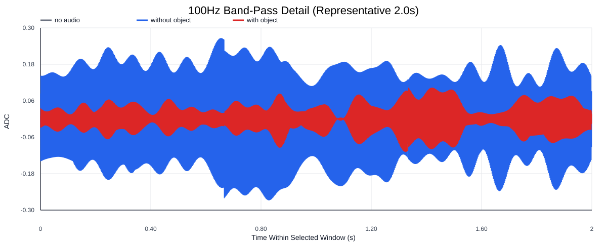
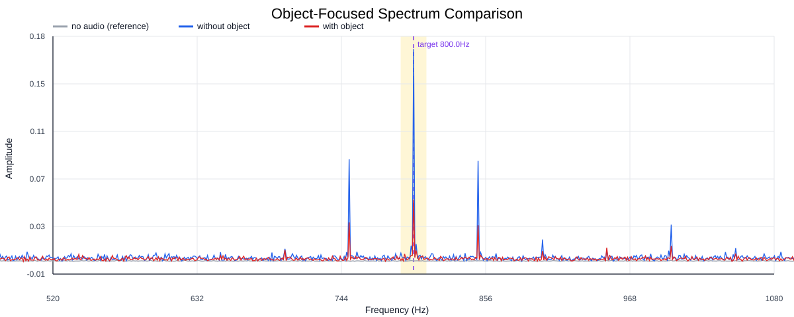
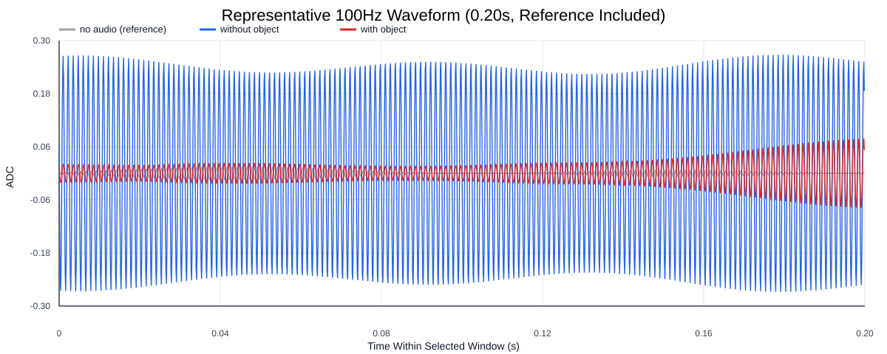
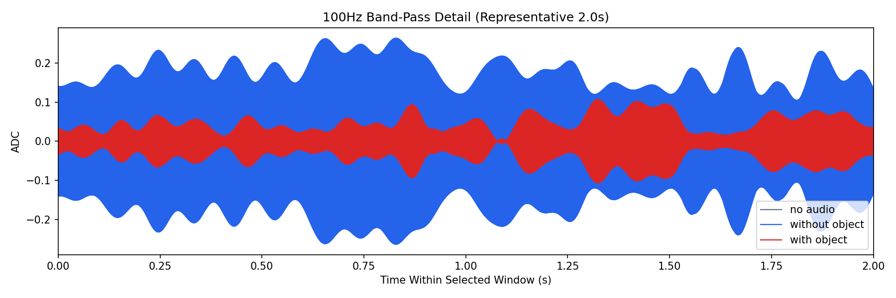
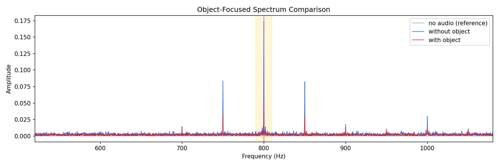
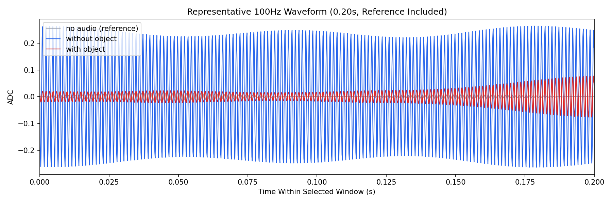

Background: F:\项目类文件夹\异物检测4.10\Data_Dual\frequency_sweep\0800Hz\repeat_02\raw\no_audio.csv
Without object: F:\项目类文件夹\异物检测4.10\Data_Dual\frequency_sweep\0800Hz\repeat_02\raw\without_object.csv
With object: F:\项目类文件夹\异物检测4.10\Data_Dual\frequency_sweep\0800Hz\repeat_02\raw\with_object.csv
| Metric | 无音频 | 100Hz无异物 | 100Hz有异物 | 无异物/无音频 | 有异物/无异物 | 有异物/无音频 |
|---|---|---|---|---|---|---|
| centered_rms | 0.030739 | 0.311675 | 0.192538 | 10.1395 | 0.6178 | 6.2637 |
| raw_target_amp | 0.000352 | 0.174069 | 0.050655 | 494.1555 | 0.2910 | 143.8025 |
| filtered_rms | 0.002542 | 0.128681 | 0.039380 | 50.6290 | 0.3060 | 15.4939 |
| filtered_target_amp | 0.000352 | 0.174069 | 0.050655 | 494.1555 | 0.2910 | 143.8025 |
| filtered_energy_ratio | 0.006837 | 0.170460 | 0.041832 | 24.9323 | 0.2454 | 6.1186 |
| window_filtered_target_amp_mean | 0.002152 | 0.176352 | 0.050370 | 81.9637 | 0.2856 | 23.4107 |
| window_filtered_target_amp_std | 0.002663 | 0.042360 | 0.022875 | 15.9048 | 0.5400 | 8.5886 |





